Hướng dẫn sử dụng cho con
kidguard trên máy của con cho biết con còn bao nhiêu phút dùng app hôm nay, và giúp con nhắn tin, gọi video cho cả nhà.
Cha mẹ nên đọc cùng con lần đầu.
Cài đặt lần đầu
Cha mẹ làm cùng con, khoảng 5 phút.
Vào nhóm gia đình
- Cài kidguard trên máy con, mở app.
- Đọc Điều khoản sử dụng và Chính sách bảo mật cùng cha mẹ, tích ô Tôi đã đọc và đồng ý, bấm Đồng ý và tiếp tục.
- Chọn Con.
- Nhập mã nhóm (ví dụ KG7-4QX), hoặc bấm Quét QR và quét mã trên máy cha mẹ (Cài đặt → Mã nhóm).
- Chờ cha mẹ bấm Duyệt trên máy cha mẹ.
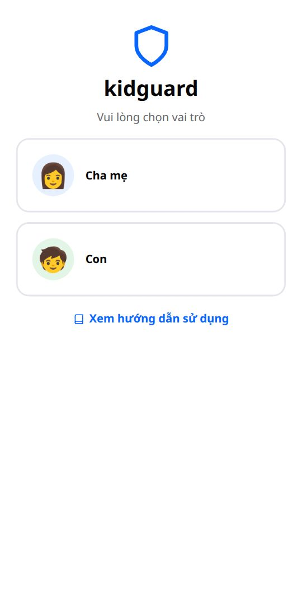
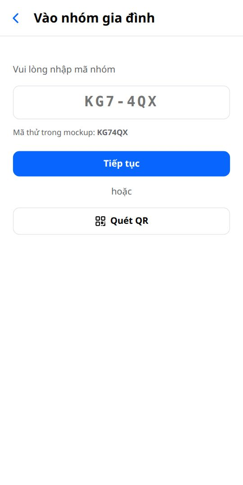
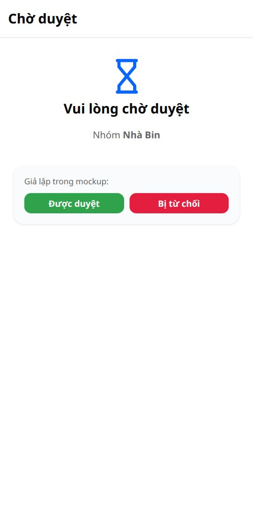
Xem app ghi lại những gì
Trước khi dùng, app cho con biết những gì sẽ gửi cho cha mẹ:
- App đã mở và mở bao lâu.
- Từ khóa tìm kiếm.
- Trang web và video YouTube đã xem.
- Khi quyền của app bị tắt.
Bấm Đồng ý để tiếp tục.
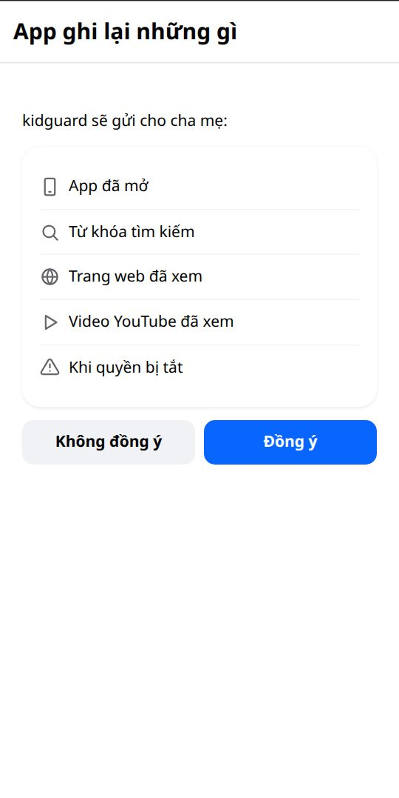
Cấp quyền cho app
App cần 3 quyền và được chạy nền thì mới tính giờ và khóa đúng. Mỗi bước: bấm Mở Cài đặt, bật kidguard, quay lại app, bấm Tiếp.
| Bước | Quyền | Để làm gì | Trong Cài đặt máy |
|---|---|---|---|
| 1 | Trợ năng | Khóa app đúng giờ | Trợ năng → Ứng dụng đã cài → kidguard → bật |
| 2 | Thống kê sử dụng | Đếm thời gian dùng | Quyền truy cập dữ liệu sử dụng → kidguard → bật |
| 3 | Quản trị máy | Giữ app luôn chạy, không gỡ được | Ứng dụng quản trị thiết bị → kidguard → bật |
| 4 | Chạy nền | Máy không tự tắt app | Theo hãng máy, xem bảng dưới |
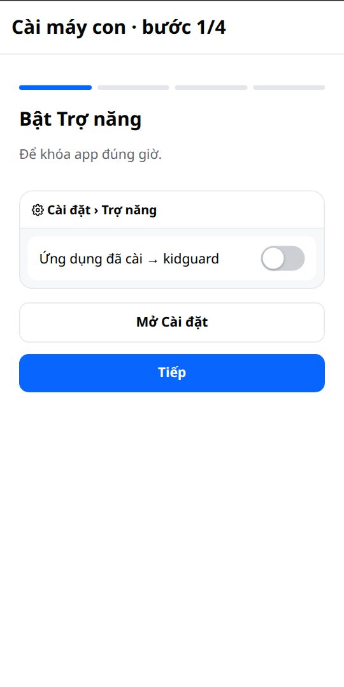
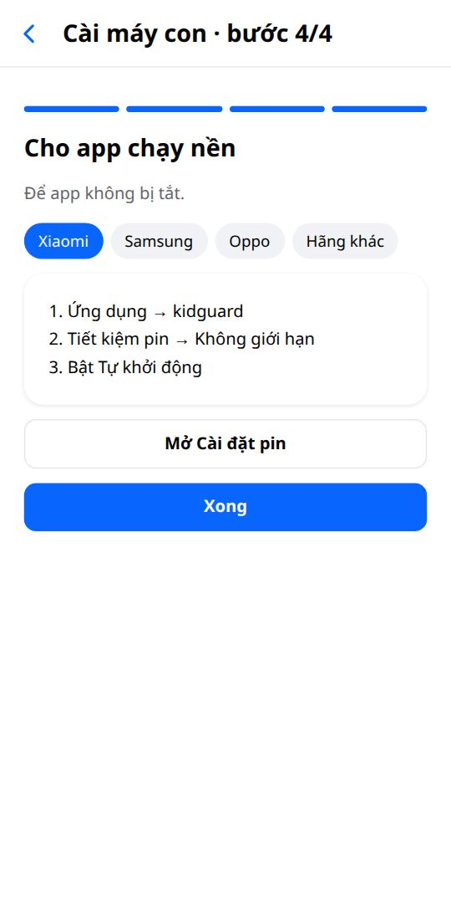
Bước 4: cho app chạy nền theo hãng máy
Ở bước 4, chọn đúng hãng máy rồi làm theo:
| Hãng | Cách làm |
|---|---|
| Xiaomi, Redmi, POCO | Ứng dụng → kidguard → Tiết kiệm pin → Không giới hạn → bật Tự khởi động |
| Samsung | Ứng dụng → kidguard → Pin → Không hạn chế |
| Oppo, Realme | Pin → kidguard → bật Chạy nền → bật Tự khởi động |
| Hãng khác | Ứng dụng → kidguard → Pin → Không tối ưu |
Dùng hằng ngày
Màn hình chính có 3 tab: Hôm nay · Chat · Cài đặt.
Xem giờ còn lại
Mở tab Hôm nay:
- Vòng tròn: số phút còn lại hôm nay. Còn ít thì vòng chuyển màu đỏ.
- Dòng dưới vòng: hôm nay được bao nhiêu giờ (có ghi thêm nếu cha mẹ thưởng phút).
- Khung giờ: giờ được dùng máy và giờ hạn chế (giờ ngủ).
- App tính giờ: các app trừ vào số phút, kèm số phút đã dùng.
- Luôn dùng được: các app không tính giờ.
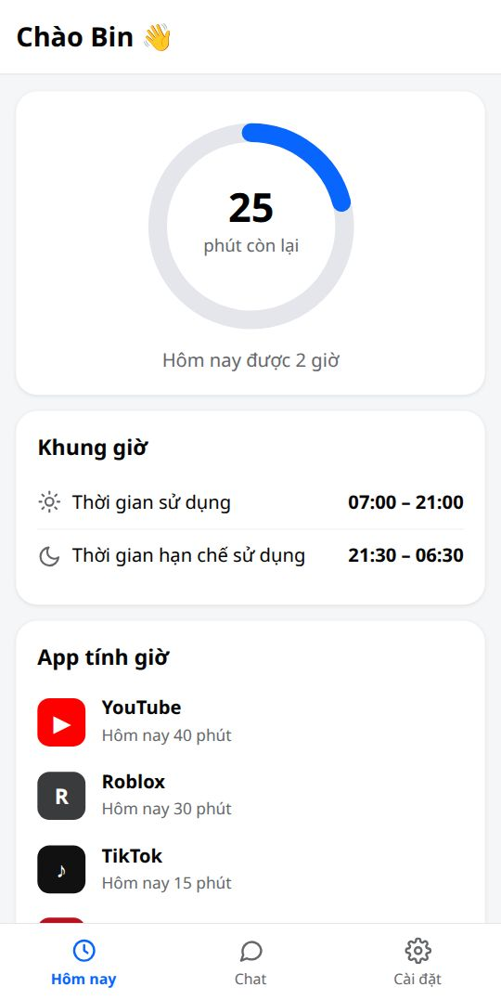
Khi máy bị khóa
Màn hình khóa ghi lý do và lúc được dùng lại.
| Lý do | Khóa gì | Được dùng lại khi |
|---|---|---|
| Hết giờ hôm nay | Chỉ các app tính giờ | 00:00 ngày mai, hoặc cha mẹ thưởng phút |
| Ngoài giờ được dùng / giờ ngủ | Cả máy | Tới giờ được dùng |
| Cha mẹ bấm Khóa ngay | Cả máy | Cha mẹ bấm Mở khóa |
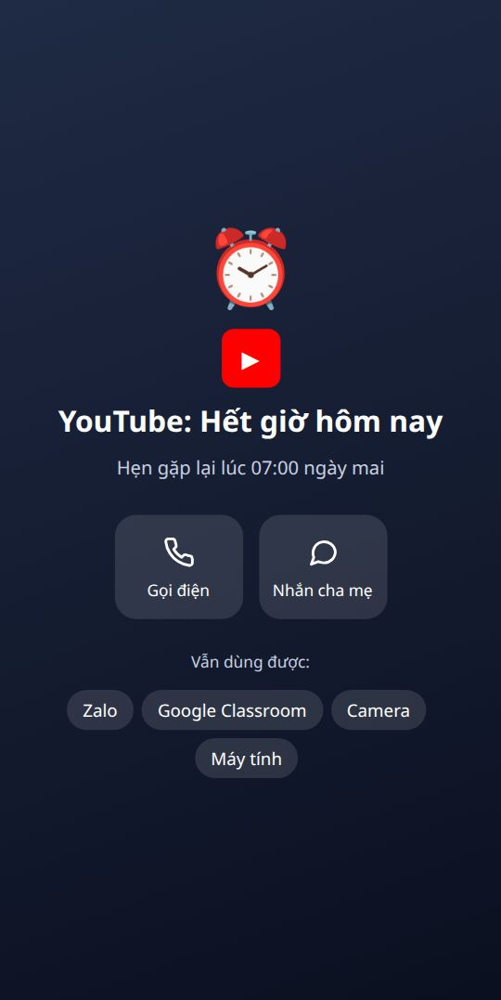
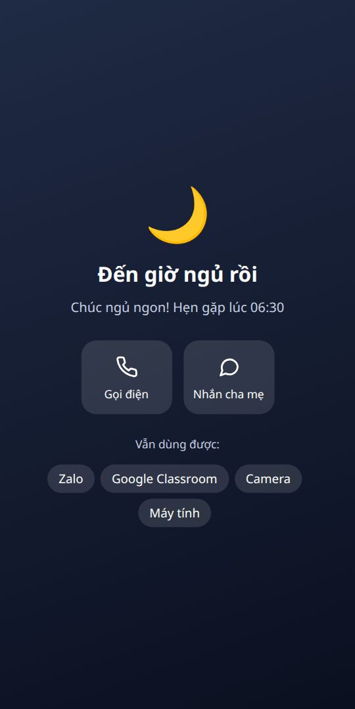
Khi bị khóa, con vẫn:
- Bấm Gọi điện để gọi điện thoại.
- Bấm Nhắn cha mẹ để nhắn tin, gọi video qua kidguard.
- Mở các app ở dòng Vẫn dùng được (ví dụ Zalo, Google Classroom, Camera, Máy tính).
Nhắn tin, gửi ảnh
- Mở tab Chat. Dòng đầu là Cả nhà, dưới là từng người (cả anh chị em).
- Bấm 1 dòng, gõ chữ vào ô Aa, bấm nút gửi.
- Gửi ảnh: bấm nút ảnh bên trái ô chat.
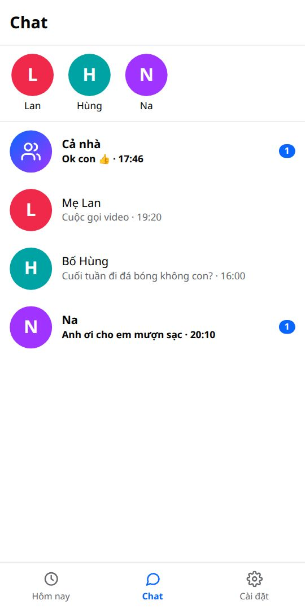
Gọi video
Gọi 1 người
- Mở chat với người đó → bấm nút máy quay ở góc trên bên phải.
- Khi có người gọi tới: bấm nút xanh để nghe, nút đỏ để từ chối.
Gọi cả nhà
- Mở chat Cả nhà → bấm nút máy quay. Mọi người đổ chuông.
- Có người gọi cả nhà: bấm nút xanh để vào, nút đỏ để bỏ qua.
- Lỡ chuông: mở chat Cả nhà, bấm Tham gia khi cuộc gọi còn chạy.
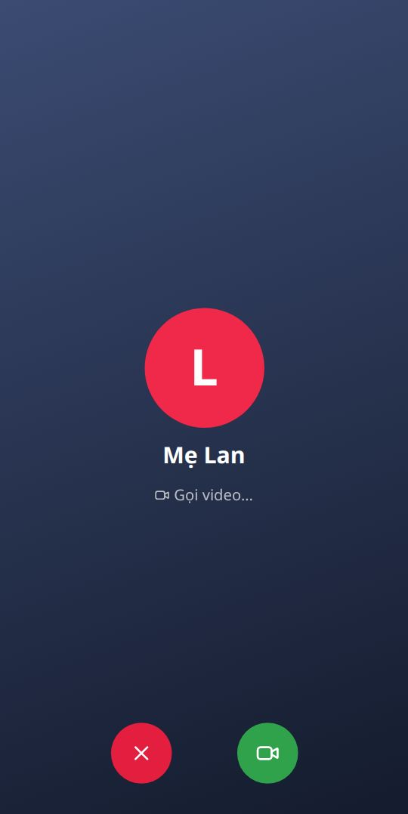
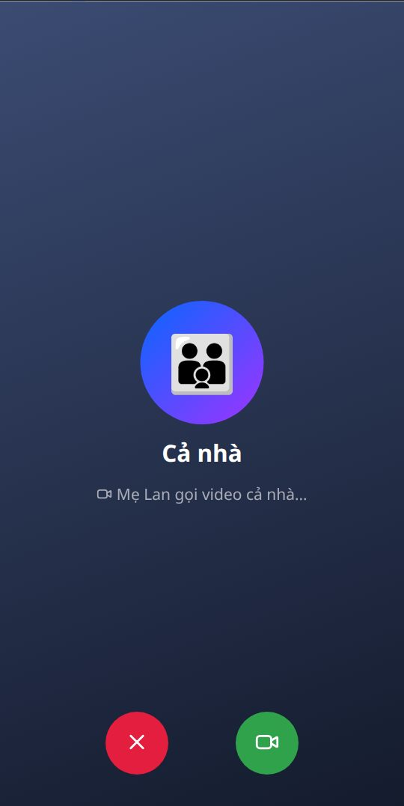
Cài đặt
Tab Cài đặt.
Tên, ngôn ngữ, xem lại quyền riêng tư
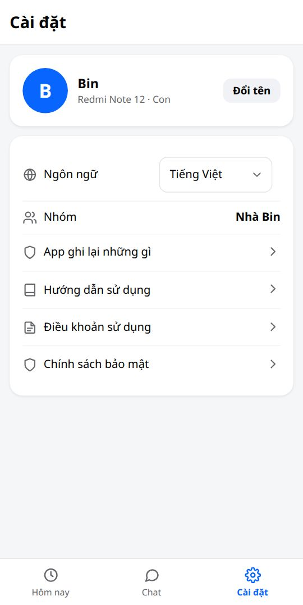
- Đổi tên: tên mà cả nhà thấy trong chat.
- Ngôn ngữ: bấm ô bên phải, chọn Tiếng Việt hoặc English.
- Nhóm: tên nhóm gia đình đang ở.
- App ghi lại những gì: xem lại những gì gửi cho cha mẹ.
- Hướng dẫn sử dụng: mở trang này.
- Điều khoản sử dụng, Chính sách bảo mật: đọc lại bất cứ lúc nào.
Khi gặp sự cố
Câu hỏi thường gặp.
Bật lại quyền
Quyền bị tắt (do cập nhật máy, dọn máy, hoặc lỡ tay) → tab Hôm nay hiện dòng đỏ "Trợ năng đang tắt".
- Bấm Bật lại.
- Trong Trợ năng, bật lại kidguard.
- Quay lại app. Dòng đỏ biến mất là xong.
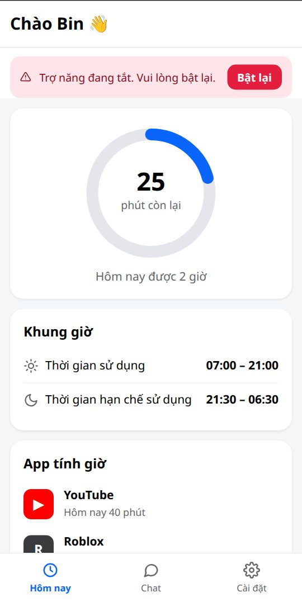